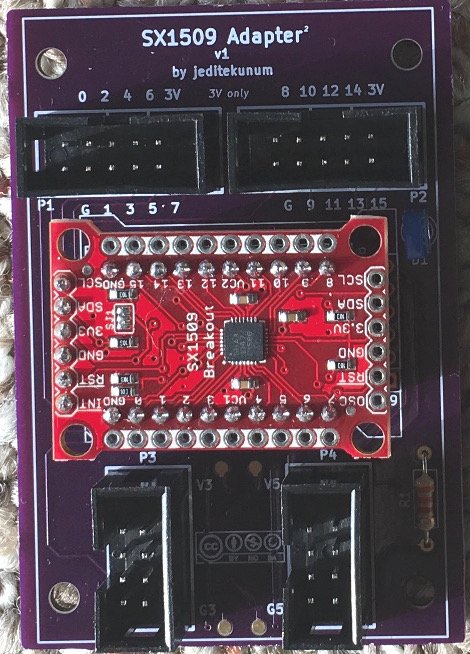

SX1509 I/O Expander Adapter Adapter
January 2018
SX1509 16 I/O Expander for I2C
The SX1509 is a wonderful I/O expander for use in home automation projects involving LEDs. Unlike other I/O expanders, it has the ability to provide hardware-driven LED special effects, such as dimming and fade. What's not so pleasant is that it only comes in a QFN-UT-28 package requiring SMD soldering.
The SparkFun SX1509 I/O Expander Adapter
The SparkFun SX1509 Adapter is a good breakout for the SX1509 but it needs another adapter for mounting in a project. This article presents an adapter for the adapter.
My Adapter Adapter
A PCB of the adapter adapter can be ordered from OSHPark. (As of 2018 ~$28 for 3 boards)
The simple schematic is available here.
The I/O pins come out to a connector compatible with my Isolated 8 I/O Adapter for Elexol et al.
The controller connection is via I2C and uses my 8 pin IDC daisy-chainable bus connector. It brings out the ~INT and ~RST lines, SDA and SCL, +3V & ground. The +5V & ground pins are not used by this board.
Software
The SX1509 can be controlled by any I2C-compatible processor including Arduino and any of the much more powerful embedded Linux systems such as NanoPi NEO, BeagleBone Black, Orange Pi, Raspberry Pi, etc. The interrupt line can be connected to a GPIO pin providing an event to user-space applications. I2C is also available to user-space. Given the low cost of these systems it is practical to use a full blown *nix environment for button and LED interfacing.
Example
